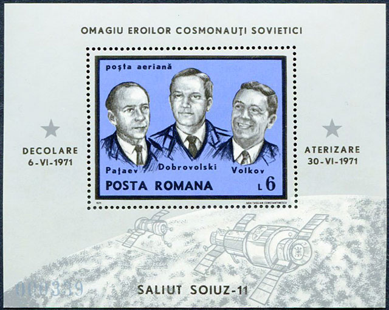
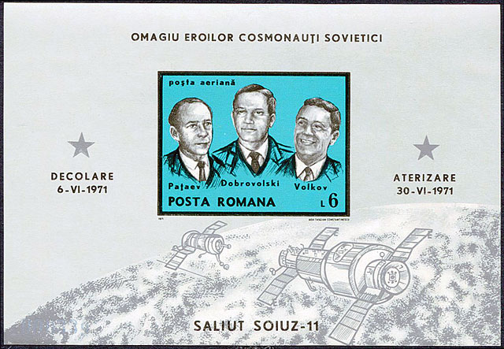
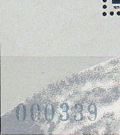
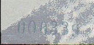
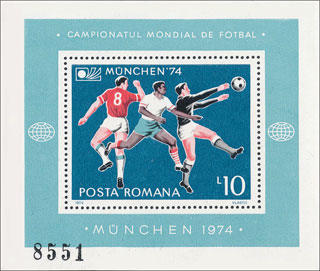
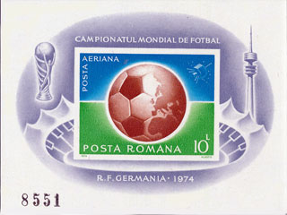
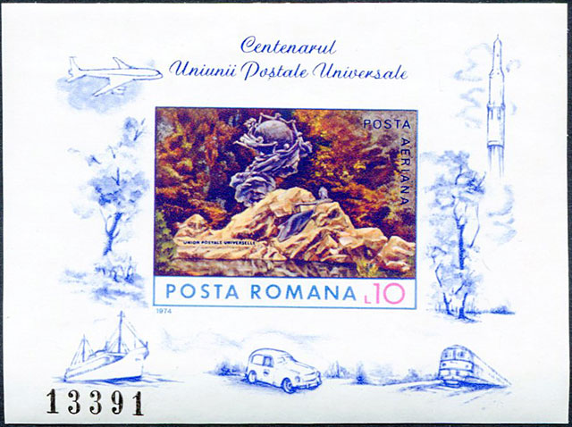

COLITELE FRUSTRARII MELE, REVAZUTE DUPA 40 DE ANI
Victor MANTA, PWO, AIJP
Acest articol reprezinta o continuare a celui intitulat „ O întâlnire, dupa 50 de ani, cu tineretea mea filatelica ” 1 si se refera la colitele nedantelate romanesti emise de Posta Româna vreme de un deceniu, începând cu anul 1971.
Înainte de anul 1971 ICS Filatelia a limitat puternic doar un numar redus de emisiuni vândute colectionarilor la valoare faciala, precum Jocurile Olimpice de la Innsbruck (1963), Jocurile Olimpice de la Tokio si Cosmonautii lumii (1964). Articolul mentionat mai sus s-a referit mai pe larg la aceste emisiuni.
Situatia s-a schimbat radical pe 23 iulie 1971, o zi care a fost si care va ramâne una neagra pentru filatelia româneasca, fiind ziua în care fost emisa prima colita nedantelata, Soiuz 11 , dedicata decesului în cursul misiunii a trei cosmonauti sovietici. Spre deosebire de orice s-a întâmplat înainte, aceasta colita, urmata de altele, în majoritatea lor având tematici de mare interes, precum cucerirea spatiului cosmic si Jocurile Olimpice, nu a putut fi achizitionata în mod legal în România, tara în numele careia aceasta a fost emisa.
Aceasta colita cu chenar negru, dedicata unor tragice decesuri, a reprezentat un fel de deces filatelic si pentru mine personal, prin renuntarea mea de a continua colectionarea tematicii „Cucerirea cosmosului”. Motivul a fost ca la dificultatea deja existenta a procurarii unor marci postale din strainatate s-a adaugat brusc un impediment neasteptat si insurmontabil, cel al procurarii unor emisiuni emise chiar de tara în care traiam.

De regula, pentru a mai îndulci pilula, colitele nedantelate mentionate mai sus au fost emise odata cu unele dantelate, care puteau fi procurate la valoarea lor faciala prin comertul filatelic de stat. Exista însa o diferenta, si nu una lipsita de importanta pentru filatelisti, si anume cea a tirajelor. Spre exemplificare, în cazul colitelor Soiuz 11 , colita dantelata, Michel Block 85, a fost tiparita într-un numar de 100 000 exemplare, pe când perechea ei nedantelata, Michel Block 86, a avut parte de un tiraj de numai 12 500 de exemplare. Acest tiraj scazut a facut ca ele sa atraga nu numai atentia multor filatelisti, dornici sa aiba colectii cât mai complete, dar si a unor persoane aflate mai spre periferia filateliei, care au vazut în aceasta situatie anormala o sursa de câstiguri mari si rapide.
Ceva cu totul iesit din comun pentru acele vremuri a fost ca autoritatile sovietice au facut cunoscut decesul din timpul misiunii a celor trei cosmonauti, ceea ce a facut posibila emiterea acestor amintiri filatelice si a sporit interesul fata de ele.
Reproduc în acest articol imaginile celor doua colite, pe care le-am cumparat pe Web în cadrul licitatiilor unui negociant din Germania. Odata cu ele, am câstigat si licitatiile pentru urmatoarele (cronologic) sapte colite nedantelate emise, pentru care am licitat atât cu scopul de a atenua o frustrare din perioada tineretii mele, cât si pentru a ma putea cufunda mai adânc în perioada respectiva.
Efortul financiar de a le procura nu a fost dramatic, desi a fost considerabil mai mare decât cel depus pentru emisiunile „ Cosmonautii lumii ” si „ J.O. de la Tokio ”, facut pentru cercetarea legata de primul articol. As mentiona în treacat ca licitatiile pe Web sunt interesante în sine, putând fi de-a dreptul palpitante în fazele lor finale. Ele necesita o documentare prealabila (consultari de cataloage, gasirea unor informatii asupra preturilor platite înainte, etc.), sânge rece, rabdare si stapânire de sine. Cum bine spun francezii, pe ansamblu este recomandabil à consommer avec moderation.
Impresia pe care am avut-o când am putut tine în mâna (mai precis în penseta) aceste colite, pentru prima data în viata mea, a fost una care se lasa cu dificultate descrisa. Nu am putut sa nu îmi amintesc momentul când am putut vedea, pentru prima si ultima data, în anii 1971 - 1972, un exemplar al colitei Soiuz 11 nedantelate. Atunci mi-a aratat-o foarte rapid un filatelist cunoscut, dupa ce a scos-o cam pe furis dintr-un carnet pe care îl tinea în buzunarul de la piept al jachetei sale. Am aflat de la el ca a platit pe ea suma de 300 lei, ceea ce reprezenta cam un sfert din salariul lunar al unui fizician aflat în primul sau an de activitate profesionala.

M-am ferit sa-l întreb de unde a achizitionat-o, si probabil ca oricum nu mi-ar fi spus. Ce am aflat abia prin anul 2000, de la un fost negociant „din umbra” al vremurilor trecute, a fost ca un numar important de colite nedantelate a fost sustras direct din Fabrica de timbre , ca unii dintre faptasi, precum si dintre revânzatori, au fost prinsi, judecati si condamnati la executarea unor termene de privare de libertate, cum se spune în limbajul legal. Am aflat chiar de la unul dintre revânzatori ca el a stat doi ani la închisoare si ca i-a fost confiscata, citat, „toata rezerva sa de comert”.
Toate aceste amintiri au avut drept consecinta ca nu am putut sa ma bucur prea mult de faptul ca m-am întâlnit, peste ani si tari, cu colitele frustrarii mele, lucru pe care cititorul desigur ca îl va întelege.
Sa ne referim însa si la câteva aspecte mai apropiate de filatelie si, în consecinta, mai placute. Cu siguranta ca ati observat ca cele doua colite se deosebesc prin culoare, ceea ce n-a fost o idee rea. Ce m-a surprins însa a fost ca ele se deosebesc mult si prin marime, colita nedantelata (130 x 90 mm) fiind ca suprafata cu 46% mai mare decât cea dantelata (100 x 80 mm). Aceasta marire a suprafetei nu este în nici un fel utilizata de designer (bine cunoscuta artista grafica Aida Tasgian Constantinescu), fiind folosit fundalul de la colita dantelata, care este largit pentru a acoperi surplusul de suprafata.
Colitele reproduse poarta acelasi numar mic (!) de serie, 000339, ceea ce în opinia mea le face si mai interesante. În primul rând sa notam ca aceste numere au fost tipografiate 2 , ceea ce face ca cifrele lor sa apara în relief pe partea gumata a colitei.


As observa ca probabilitatea ca doua colite cu acelasi numar, una dantelată şi cealaltă nedantelată, sa se „întâlneasca” întâmplator pe parcursul lor este extrem de mica. Motivul este că, cel puţin de la un moment dat, ele sunt procesate separat şi au, în final, tiraje foarte diferite. Aceasta ce ma face sa cred ca ele au fost preselectionate si apoi oferite împerecheate spre vânzare. Acest lucru puteau sa-l faca fie marii negocianti din strainatate, fie întreprinderea de stat exportatoare, sau împerecherea dupa numar de serie ar fi putut sa se „întâmple” deja în amonte, la Fabrica de Timbre.
Sa notam si faptul ca acolo unde ne-am astepta la mai multa atentie, si anume la colita nedantelata, cifra „9” de la sfârsitul numărului de serie este binisor decalata spre în jos, lucru pentru care nu am nici o explicatie si care ridica un oarecare semn de întrebare.
Perechea de colite dedicate Campionatului Mondial de Fotbal din Germania, din 1974, cu acelasi numar imprimat atât pe colita dantelata (Mi. Block 114, tiraj 150 000 exemplare), cât si pe cea nedantelata (Mi. Block 115, tiraj 27 000 exemplare), pare sa confirme banuielile mele, legate de împerecherea facuta în lantul de producere – vânzare, a unor colite ce poarta acelasi numar.

Observam ca la aceste colite s-a ajuns cu împerecherea la numere de serie destul de mari. Pentru a obtine aceasta pereche de colite „înfratite”, am licitat la magazinul on-line al unui negociant aflat într-o alta tara Vest-europeana în raport cu cel de la care am cumparat colitele Soiuz-11 .

Aceste doua colite au si alte particularitati remarcabile. Numele tarii în care s-a desfasurat competitia apare, în mod curios, doar pe colita nedantelata, cea cu o distribuire restrânsa. Înainte de reunificarea Germaniei, în 1990, numele Germaniei de Vest aparea în România ca R.F. Germana (RFG), iar a Germaniei de Est ca R.D. Germana (RDG). Numele de R.F. Germania, cel care apare pe colita nedantelata, va fi folosit oficial in România începând cu anii 1990 - 1991, ceea ce ma face sa cred ca numele tarii organizatoare a competitiei, care apare pe colita nedantelata, a fost ales cu scopul de a înlesni vânzarea pe larg a acesteia în RFG. Textul care apare pe colita dantelata, „MÜNCHEN '74”, însotit fiind de „Campionatul Mondial de Fotbal”, este la rândul sau imprecis, deoarece competitia s-a desfasurat în opt orase diferite din RFG, si în plus în Berlinul de Vest. În limbaj fotbalistic am putea vorbi, asa cum se vede din imagine, de un fault la portar, iar in cel obisnuit despre erori facute intentionat.
Este interesanta pozitia pe care au luat-o si pe care o iau marile cataloage internationale în raport cu aceste colite. Din memorie, reputatul catalog Zumstein Europa Ost , astazi disparut, mentiona existenta acestor colite, fara a le cota si reproduce, punând la începutul textului un romb negru, ce semnifica faptul ca era vorba de emisiuni nedorite. În ziua de astazi catalogul Scott le mentioneaza si le coteaza, fara a le atribui numere. În plus fata de Scott, catalogul Michel le prezinta imaginile si le atribuie numere individuale.

O colita pe care am achizitionat-o cu aceeasi ocazie, si care mi-a atras atentia, este cea aparuta pe 15 mai 1974. Ea este dedicata Centenarului Uniunii Postale Universale, Michel Block 11 3, tiraj 30.000 de colite numerotate. Din catalogul Scott 2009 aflam despre ea 3 ca nu s-ar cunoaste ca aceasta colita sa fi fost vânduta publicului la oficiile postale. Aceasta informatie coincide cu ceea ce stie si autorul, cu precizarea importanta ca acelasi lucru este valabil si pentru multe alte colite nedantelate, emise în perioada pe care am precizat-o la începutul acestui articol, si vândute exclusiv în afara granitelor României. Din pacate n-am putut sa gasesc nicaieri în Scott sau Michel o asemenea precizare.
În ciuda felului inacceptabil în care aceste colite au fost emise si comercializate în anii 1970, ele fac parte din patrimoniul filateliei românesti si, în consecinta, reprezinta astazi obiecte de colectie si studiu. In final as dori sa-mi exprim convingerea ca în timp o mare parte a acestor colite, expatriate fortat sub un regim opresiv, se vor întoarce în tara lor de origine si îsi vor gasi locul în clasoarele filatelistilor din România, alaturi de alte colite românesti moderne pretuite de cunoscatori, cum ar fi colita Vlad Tepes (Bucuresti – 500, tiraj 30 000) si cea supratiparita a Centenarului marcii românesti (tiraj 20 000), ambele emise în 1959.
Lower Manhattan, New York City, SUA, noiembrie 2013 - ianuarie 2014
Referinte
1. Aparut în revista philatelica.ro Nr. 29, 2013, precum si pe site-ul meu, sub
http://www.marci-postale.com/History/Printing/50-years-after-ro.htm2. În conformitate cu catalogul Michel 2013: „Kontrollnummern in Bdr. (Buchdruck - VM) eingedruckt”
3. „An imperf airmail UPU souvenir sheet of one (10 l) exists. ... This sheet is not known to have been sold to the public at post offices”. Scott 2009, Volume 5, dintr-o nota care apare dupa Scott # 2482.
Published: 02/20/2014 Revised: 11/16/2014. |
Click the banner above to visit the site |